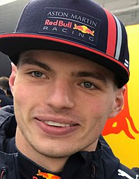

Campeão
-
Max Verstappen

-
Equipe de Max: Red Bull Racing
-
Pimeira corrida ganha:
Max Emilian Verstappen é um automobilista neerlandês. Ele é piloto de Fórmula 1 desde 2015, tendo feito sua estreia pela equipe Toro Rosso. Foi duas vezes campeão da Fórmula 1 em 2021 e 2022

A Red Bull Racing, popularmente conhecida como Red Bull ou pela sua abreviação RBR e atualmente competindo como Oracle Red Bull Racing, é uma equipe de automobilismo baseada no Reino Unido que compete no Campeonato Mundial de Fórmula 1 sob uma licença austríaca.
O Grande Prêmio da Arábia Saudita de 2021 foi a vigésima primeira etapa da temporada de 2021 da Fórmula 1. Foi disputado em 05 de dezembro de 2021 em um circuito nas ruas da cidade de Gidá, na Arábia Saudita.
Vice-Campeão
-
Charles Leclerc
-
Equipe de Charles: Ferrari
-
Pimeira corrida ganha:

Charles Marc Hervé Perceval Leclerc, mais conhecido como Charles Leclerc, é um piloto de automóveis monegasco que compete na Fórmula 1 pela equipe Ferrari.

Scuderia Ferrari é uma equipe de automobilismo da montadora italiana Ferrari que compete no campeonato da Fórmula 1. É a equipe mais antiga em atividade na categoria.
O Grande Prêmio do Barém é um evento de Fórmula 1 que começou a ser disputado a partir de 2004 no Circuito Internacional do Barém, que começou a ser construído em 2002.
Terceiro Lugar
-
Sergio Pérez
-
Equipe de Max: Red Bull Racing
-
Pimeira corrida ganha:

Sergio Michel Pérez Mendoza é um automobilista mexicano que atua na Formula 1 e atualmente faz parte da grade de pilotos da equipe Red Bull Racing.
O Grande Prêmio de Mônaco (português brasileiro) ou Grande Prémio do Mónaco (português europeu) é a mais tradicional e a mais importante prova do calendário da Fórmula 1.